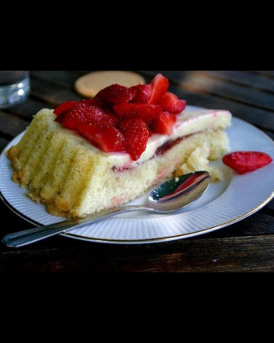

Recipe - Cream Cake

Picture: Brimbuse, Pixabay
INSTRUCTIONS
EMPTY
EMPTY
INFORMATION
A classic cream cake with raspberries, strawberries and blueberries!
INGREDIENTS
4 eggs
2 dl sugar
1 dl wheat flour
1 dl potato flour
2 tsp baking powder
5 dl berries
2 dl cream
5 dl vanilla cream
3 dl whipped cream
INSTRUCTIONS
Grease a round mold with a removable edge and sprinkle it with breadcrumbs.
Measure out eggs and powdered sugar in a bowl. Whisk to an almost white puffy batter.
Measure out wheat flour, potato flour and baking powder in another bowl. Mix to an even mixture without lumps.
Add the flour mixture to the egg and sugar batter. Whisk to a smooth batter.
Pour the batter into the mold. Bake in the lower part of the oven at 175 ° C for about 30 minutes until the cake releases the edge and the cake begins to sink a little.
Let the cake cool. Feel free to place the mold on a wire rack and place a baking towel over it. When the cake cools, it collapses a little.
Whip the cream for both the filling and the garnish at once.
When the cake has cooled, you can put the cake together. Cut the bottom into 3 parts.
Place the bottom of the cake base on a cake pan.
Spread on the vanilla cream.
Put on the next cake base.
Distribute the berries. Spread on the cream.
Put on the top cake base.
Spread the cream first around the edges and then on top. Distribute berries or fruit. Set the cream cake in the fridge.
Serve the cake, eat and enjoy.